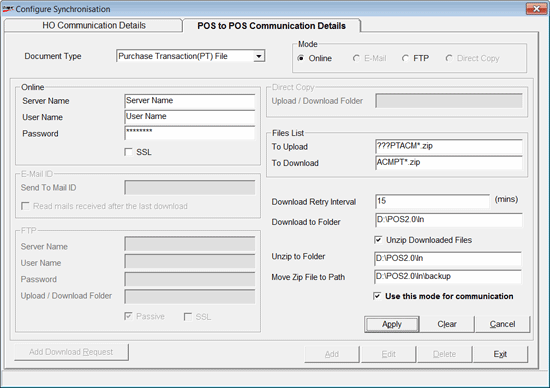

Document Type: Select the required document type. Currently only Purchase Transaction (PT) File is available.
Mode: Choose the required mode of communication. The selected mode will be used for data transfer between the showrooms. Click the corresponding links to view the related fields to be filled.
Files List: These fields are active in all the modes and hold the file type format specification used for upload and download.
To Upload: This field gets populated automatically.
To Download: This field gets populated automatically.
Download Retry Interval: Enter the interval duration in seconds between the retries by SIS. By default, the retry interval is 15 minutes.
Download to Folder: Enter the path of the folder to download the file.
Unzip Downloaded Files: Select to unzip the downloaded files.
Unzip to Folder: Enter the path of the folder to where the files are to be extracted.
Move Zip File to Path: Enter the path of the backup folder where used zip files are to be stored.
Use this mode for communication: Select to set one particular mode of communication as active. When you make one particular mode as active for a Document Type then, automatically any other mode configured for that document type becomes inactive.
Add Download Request: Click to add the task to SIS, in case SIS is restarted and the tasks get deleted.